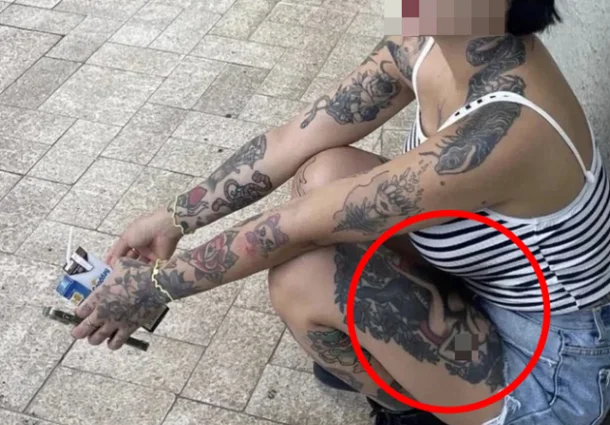

"여성 나체 문신 때문에 쫓겨났다"…사찰 출입 거부 '찬반' 논란 : 네이트 뉴스

SNS(소셜미디어)에는 "해동용궁사에는 문신한 방문객의 법당 출입을 제한하는 규정이 있냐"는 내용의 글이 올라왔다.
이에 따르면 A씨는 지난 28일 해동용궁사 법당에서 참배하려다 입구에 있던 사찰 관계자에게 제지당했다.
당시 반바지를 입고 있던 그는 복장이 문제라고 생각해 겉옷을 벗어 허리에 둘렀다.
이어 "반바지 때문이냐"고 묻자 관계자는 "그것도 그렇고 타투 때문에 안 된다"는 취지로 답했다고 한다.
A씨는 "관계자가 타투를 바라보던 시선과 나를 내보내려는 듯한 손짓이 불쾌하게 기억에 남았다"며 "마음을 다스리고 수양하고 싶어 찾았는데 예상하지 못한 이유로 참배를 거부당해 오히려 마음이 불편해졌다"고 했다.
이어 "사찰의 복장이나 참배 예절이 있다는 것은 이해한다"면서도 "타투가 있다는 이유만으로 법당 출입을 제한하는 것이 해동용궁사의 공식 방침인지 궁금하다"고 했다.
엌ㅋㅋㅋㅋㅋㅋㅋㅋㅋ